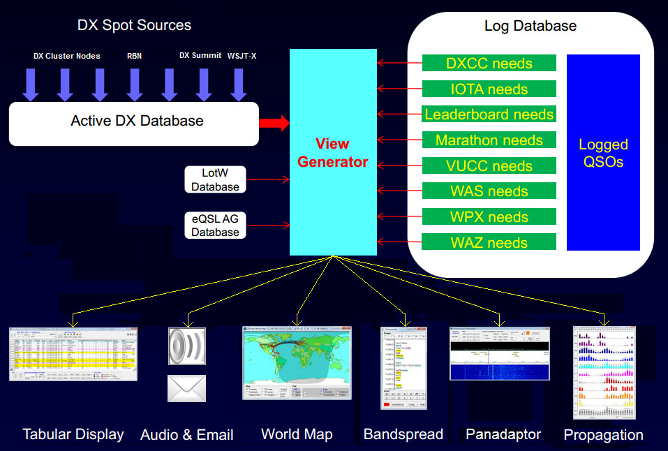

+ AA6YQ comments below Can anyone suggest some good sites to use in Spot Collector? It seems to be (arbitrarily) limited to 3 sites or so; is there an option for that? + SpotCollector can simultaneously connect to 7 sources of DX spots: - 4 DX Clusters of your choosing - a local packet cluster via VHF/UHF (for when internet access is not available) - the DX Summit web cluster - one or more local instances of WSJT-X + Reference documentation for the above is here: <https://www.dxlabsuite.com/spotcollector/Help/SourceConnection.htm> + or you can click the Help button at the top of SpotCollector's Main window and navigate to the "Connected to Spot Sources" section. + A directory of available DX Clusters is here: <http://www.dxcluster.info/telnet/index.php> + For DXers on the US west coast, I recommend - a DX Cluster close to your QTH - a DX Cluster on the US East Coast - a DX Cluster in Europe - a DX Cluster in Japan + Yes, all spots are conveyed a clusters, but being connected to a DX Cluster closer to the spotted DX can give you an advantage of up to 120 seconds - enough time to make a QSO before the cluster hordes arrive on frequency. + If you've not yet reviewed <https://www.dxlabsuite.com/dxlabwiki/GettingStarted> + and <https://www.dxlabsuite.com/dxlabwiki/CollectingSpots> + I recommend doing so.  73, Dave, AA6YQ |